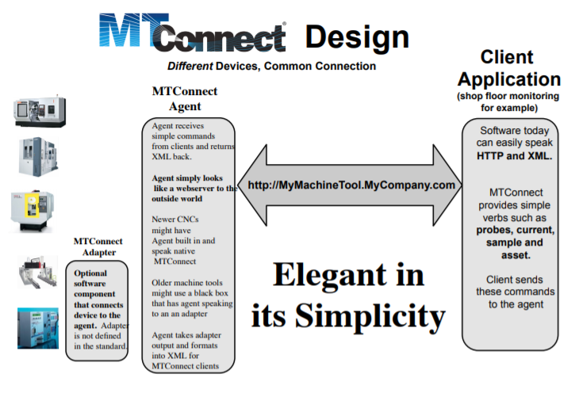

MTConnect Compliant Dashboard, Client, and Adapter
A substantial portion of my time as a Product Engineer at Turbocam International was spent working on a software development project to generate more visibility on the factory floor, leading to greater efficiency. Note that due to non-disclosure, neither the actual code nor pictures of the dashboard are available.
Summary
Turbocam International is an international manufacturing company which focuses on 5-axis machining of flow path components (Impellers, propellers, fan blades, etc.) I wanted to implement a dashboard to track the productivity of each 5-axis machine in a particular department. I developed, as part of a small team, an MTConnect Compliant dashboard, client, and adapter, which was used to monitor the uptime of a department of Turbocam.
Background
Greater visibility in the manufacturing sector has exploded in the last decade, with the IoT revolution driving big data in factories. Companies want to leverage current and historical data to eke out extra efficiency, whether it be a bottleneck or miscommunication holding up production.
Companies (MEMEX, Forcam, MachineMetrics, etc.) has swarmed in to answer this demand. Because these companies sometimes require a large financial commitment, I was tasked with developing an in-house solution. One thing that is important is standardization, because otherwise, the solution is not scalable. This is where MTConnect comes in. MTConnect was developed as an industry standard allowing companies to “plug-and-play” with many different makes and models of machine tools. Therefore, once you make machine data available in a standard format, you can easily modify or swap out the frontend without any backend modifications. A schematic of this is the following:
Adapter
Many 5-axis machines have a Heidenhain controller, however, there is not an open-source adapter that extracts runtime data and provides the data in a standard format. I used the Heidenhain SDK to create an adapter which updated machine data real-time. Along the way, I made modifications to the standard MTConnect adapter framework. I coded the adapter in C# as a Windows service.
Client
I created a Windows service using C# to act in accordance with the MTConnect standard and helped deploy on a server.
Dashboard
I worked closely with a web developer to visualize the XML data stream as a map of the factory floor. This dashboard displayed machines currently running, stopped, or waiting as well as the rolling average of the machine uptime over the past month.